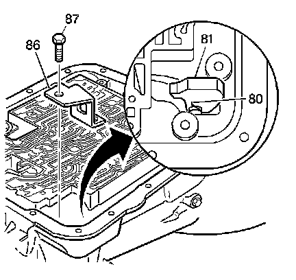
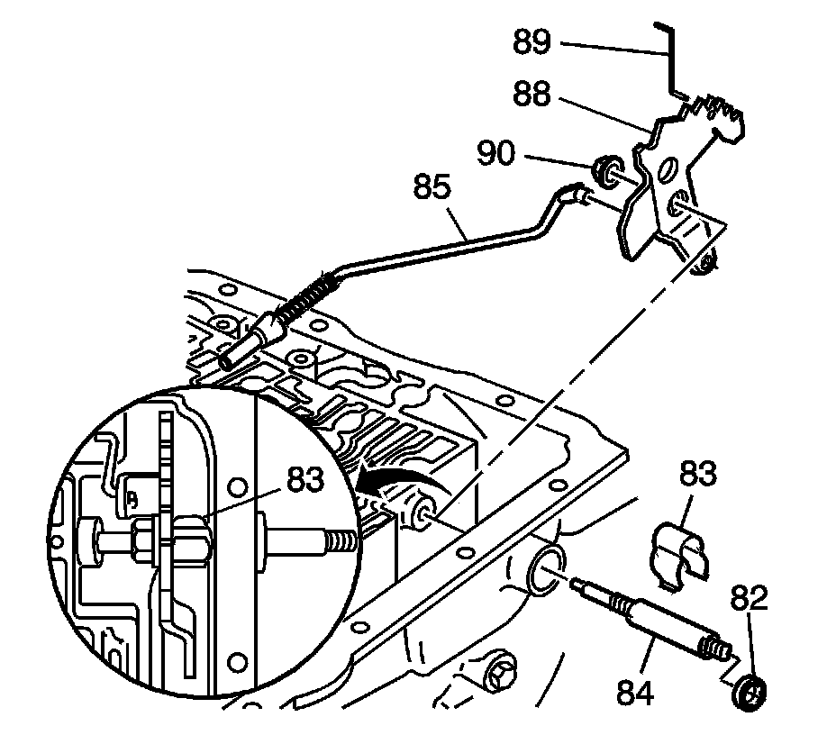

Inner Manual Linkage Installation
Inner Manual Linkage Installation

1. Install the parking lock bracket (86).
Notice: Refer to Fastener Notice.
2. Install the parking lock bracket bolt (87).
Tighten the bolt to 31 N.m (23 lb ft).
3. Inspect the following items:
^ The parking brake pawl (81) for damage or cracks
^ The parking pawl return spring (80) for being broken or missing

4. Inspect the following items:
^ The manual shaft retainer (83) for damage or cracks
^ The manual shaft (84) for damage or burrs
^ The parking lock actuator assembly (85) for damage
^ The inside detent lever (88) for damage or cracks
^ The manual valve link (89) for damage
^ The hex head nut (90) for damage or stripped threads
5. Install the following items:
^ The inside detent lever (88)
^ The parking lock actuator assembly (85)
^ The manual shaft (84) (model dependent)
^ The manual shaft retainer (83)
^ The hex head nut (90)
^ The manual valve link (89)
Tighten the nut to 31 N.m (23 lb ft).